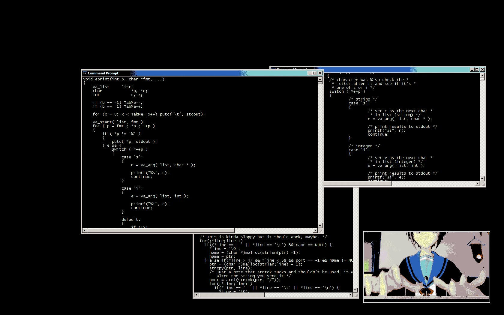

04-Linux 命令入门
为啥要学Linux终端命令¶


- 很多人可能在电视或电影中看到过类似的场景，黑客面对一个黑色的屏幕，上面飘着密密麻麻的字符，梆梆一顿敲，就完成了窃取资料的任务。
- Linux 刚出世时没有什么图形界面，所有的操作全靠命令完成，就如同电视里的黑客那样，充满了神秘与晦涩。近几年来，尽管 Linux 发展得非常迅速，图形界面越来越友好，但是在真正的开发过程中，Linux 命令行的应用还是占有非常重要的席位，而且许多Linux功能在命令行界面要比图形化界面下运行的快。可以说不会命令，就不算会 Linux。
- 在职场中，大量的 服务器维护工作 都是在 远程 通过 SSH 客户端 来完成的，并没有图形界面，所有的维护工作都需要通过命令来完成。如 磁盘操作、文件存取、目录操作、进程管理、文件权限 设定等
- Linux 发行版本的命令大概有 200 多个，但是常用的命令只有 10 多个而已
学习终端命令的技巧
- 不需要硬背，不需要硬背，不需要硬背！
- 常用命令，用的多了，自然就记住了
- 不要尝试一次学会所有的命令，有些命令是非常不常用的，临时遇到，临时查资料就可以
牢记于指尖¶
以下命令使用频率可以说是最高的，不断地练习，让他们变成你的肌肉记忆吧。
| 序号 | 命令 | 作用 | 对应英文 |
|---|---|---|---|
| 1 | ls | 查看当前文件夹下的内容 | list |
| 2 | pwd | 查看当前所在文件夹 | print wrok directory |
| 3 | cd [目录名] | 切换文件夹 | change directory |
| 4 | touch [文件名] | 如果文件不存在，新建文件 | touch |
| 5 | mkdir [目录名] | 创建目录 | make directory |
| 6 | rm [文件名] | 删除指定的文件名 | remove |
| 7 | clear | 清屏 | clear |
自动补全¶
- 在敲出 文件／目录／命令 的前几个字母之后，按下 tab 键
- 如果输入的没有歧义，系统会自动补全
- 如果还存在其他 文件／目录／命令，再按一下 tab 键，系统会提示可能存在的命令
小技巧
- 按
上／下光标键可以在曾经使用过的命令之间来回切换 - 如果想要退出选择，不想执行当前的命令，可以按
ctrl + c
终端命令格式¶
command [-options] [parameter]
说明：
command：命令名，相应功能的英文单词或单词的缩写[-options]：选项，可用来对命令进行控制，也可以省略parameter：传给命令的参数，可以是 零个、一个 或者 多个
[]代表可选
查阅命令帮助信息¶
提示
现阶段只需要 知道 通过以下两种方式可以查询命令的帮助信息。 先学习常用命令及常用参数的使用即可，工作中如果遇到问题可以借助网络搜索命令的中文资料
帮助信息 --help¶
假如一个命令叫做command，显示 command 命令的帮助信息，一般命令参数会有长格式或短格式供选择，分别用--和-为前缀
command --help
或
command -h
使用手册 man¶
查阅某个 command 命令的使用手册
man command
man是 manual 的缩写，是 Linux 提供的一个 手册，包含了绝大部分的命令、函数的详细使用说明
使用 man 时的操作键：
| 操作键 | 功能 |
|---|---|
| 空格键 | 显示手册页的下一屏 |
| Enter 键 | 一次滚动手册页的一行 |
| b | 回滚一屏 |
| f | 前滚一屏 |
| q | 退出 |
| /word | 搜索 word 字符串 |